Hi, I am Kai Xu, a Professor at the Institute of AI for Industries, Chinese Academy of Sciences. I lead the PAI Lab @ IAII and co-lead the iGRAPE Lab @ NUDT. Our work sits at the intersection of computer graphics, embodied intelligence, and physical & spatial intelligence — currently focused on world models, neural simulators, and robotic manipulation & navigation.
Before joining IAII I was a professor at the National University of Defense Technology (NUDT), where I earned my Ph.D. in 2011, and an Adjunct Professor of Simon Fraser University. From 2008 to 2010 I was a visiting Ph.D. student in the GrUVi Lab at SFU with Richard (Hao) Zhang. I did postdoctoral research at VCC@SIAT from 2012 to 2014 with Baoquan Chen, and visited the Vision and Robotics Group at Princeton in 2017–2018, working with Thomas Funkhouser and Szymon Rusinkiewicz.
I serve as an Associate Editor of ACM Transactions on Graphics and IEEE TVCG, and as Executive Area Editor of Computational Visual Media. The full paper list is on the publications page.
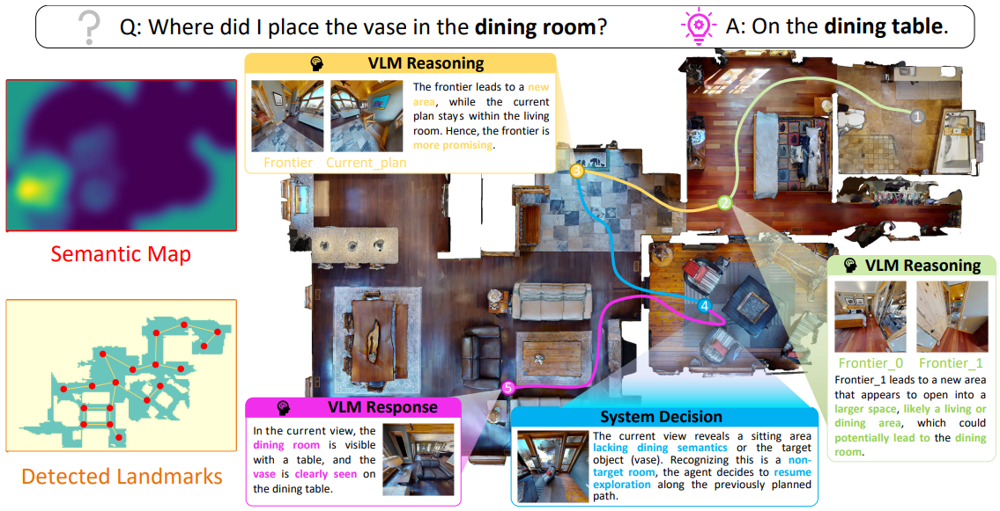
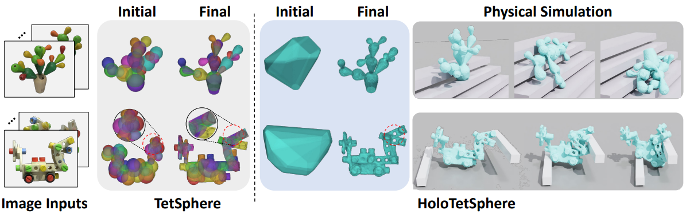
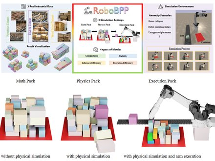
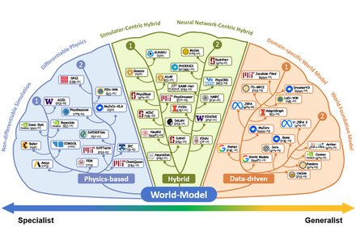
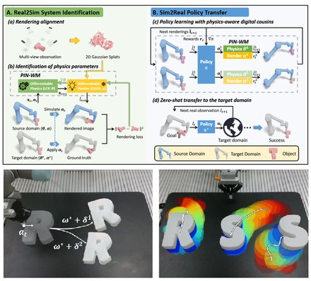
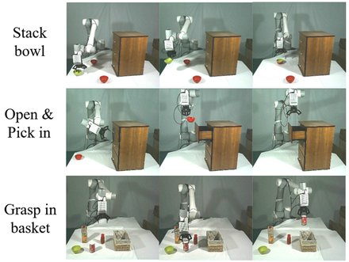
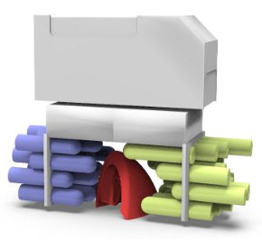
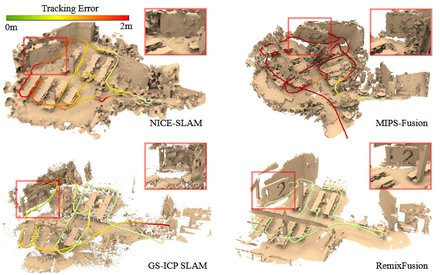
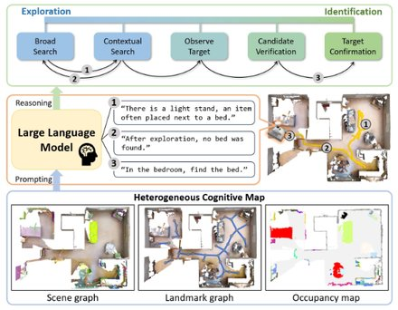
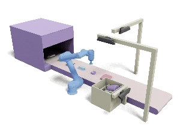
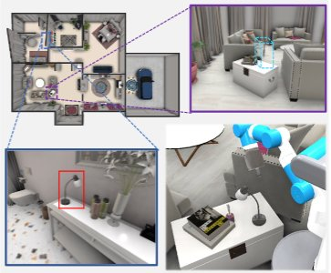
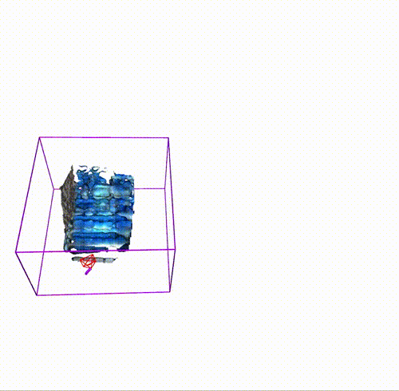
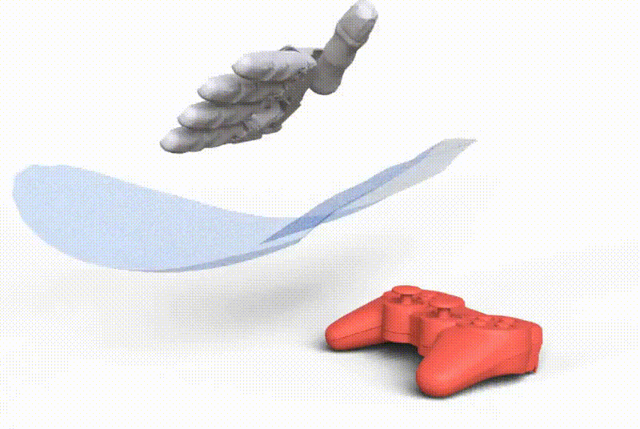
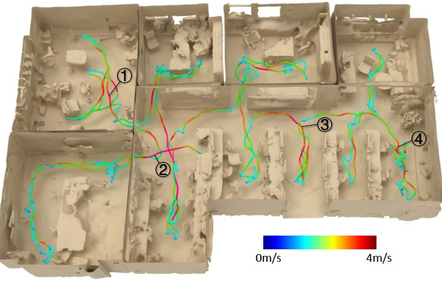
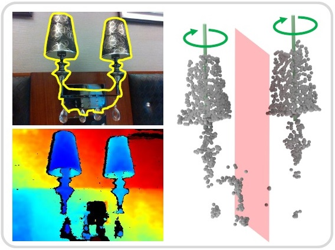
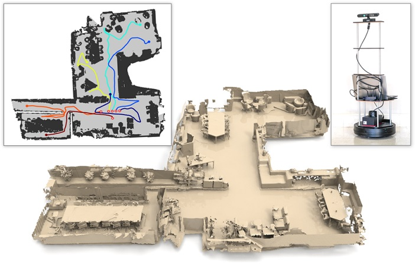
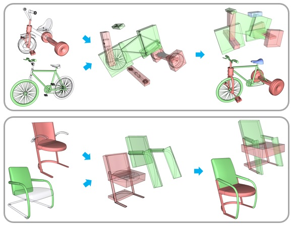
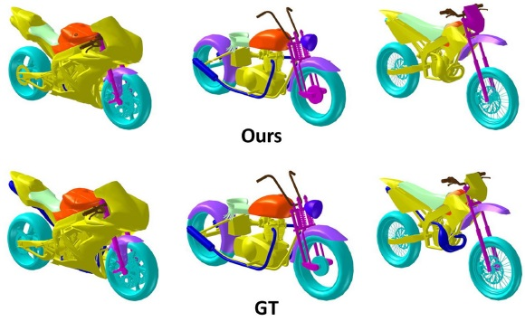
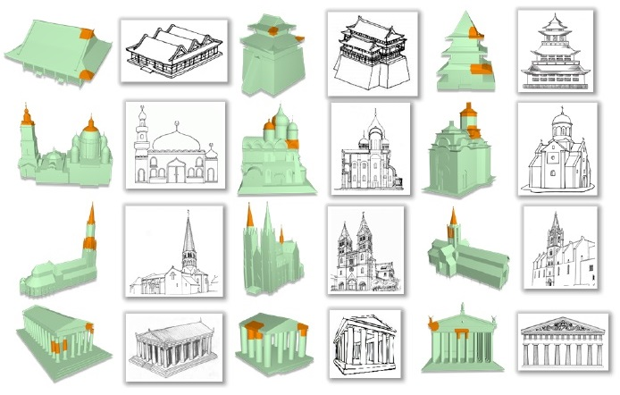
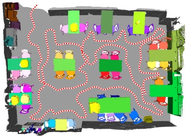
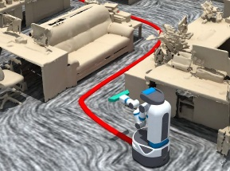
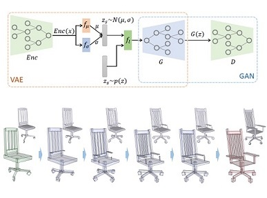
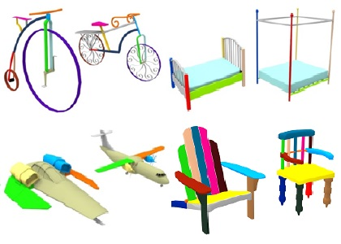
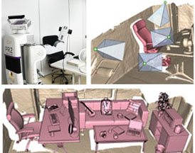
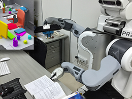
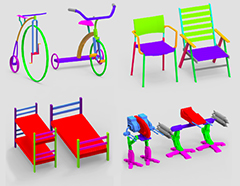
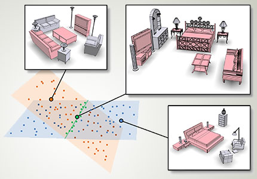
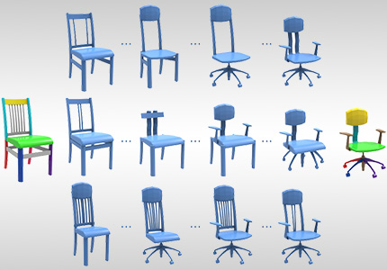
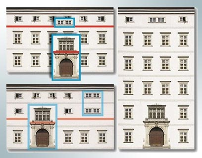
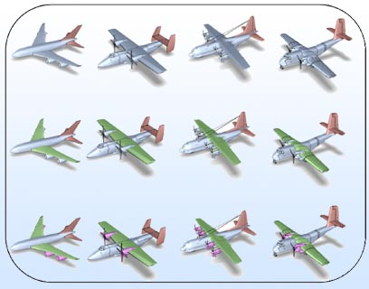
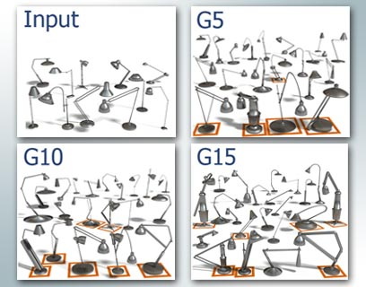
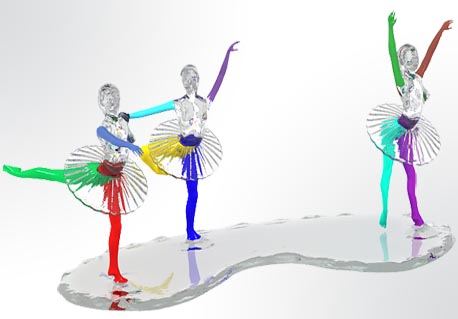
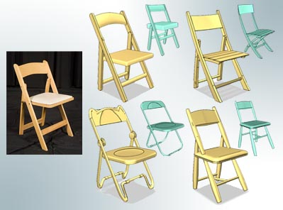
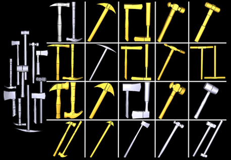
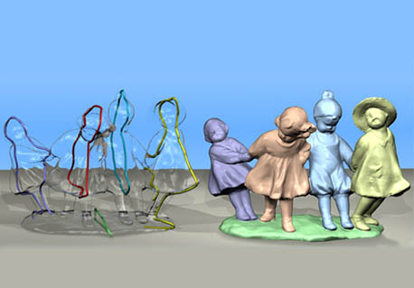
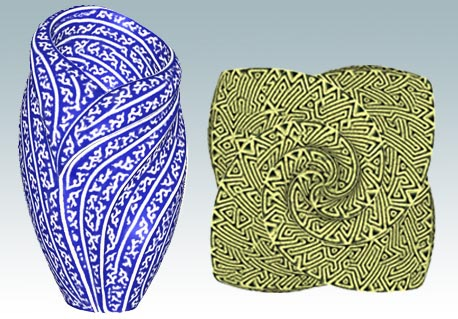